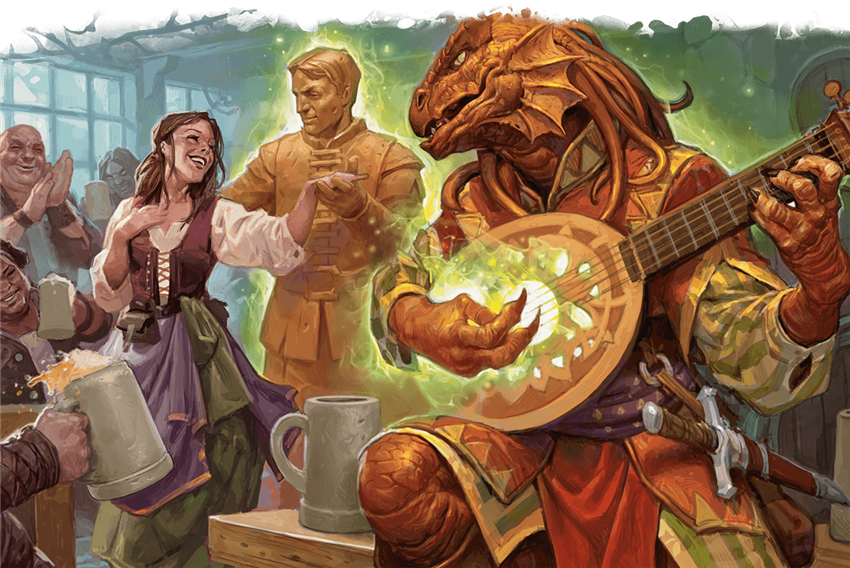

Os bardos acreditam que o cosmos é uma obra de arte - a criação dos primeiros dragões e
deuses. Aquele criativo trabalho incluiu harmonias que continuam a ressoar através da
existência hoje, um poder conhecido como o Canção da Criação. Os bardos do Colégio de
Criação inspirada naquela canção primordial através da dança, música e poesia, e seus
professores compartilham isso lição:
"Antes do sol e da lua, havia a Canção, e sua música
acordou o primeiro amanhecer.
É melodia tão encantada com as pedras e árvores que alguns
deles ganharam voz própria.
E agora eles cantam também. Aprenda a música, os alunos e você
também pode ensinar as montanhas para cantar e dançar. "
Anões e gnomos costumam encorajar
seus bardos para se tornarem estudantes da Canção da Criação. E entre draconatos, a Canção
da Criação é reverenciada, para lendas retratam Bahamut e Tiamat, o maior dos dragoes como
dois dos primeiros cantores da música.
MOTE DE POTENCIAL
Recurso de terceiro nível do colegio de criação
Sempre que você dá a uma criatura uma inspiração bárdica, você pode pronunciar uma nota
da
Canção da Criação para criar uma pequena partícula de potencial, que orbita a menos de 5
pés
dessa criatura. O mote é intangivel e invulnerável, e dura até que o dado de
BardicInspiration seja perdido. O mote parece uma nota musical , uma estrela, uma flor ou
outro símbolo de arte ou vida que você escolhe.
Quando a criatura usa a inspiração bárdica , o mote fornece um efeito adicional baseado
em
se o dado beneficia um teste de habilidade, um ataque teste, ou um teste de resistência,
conforme detalhado abaixo:
- teste de habilidade. Quando a criatura rola o Dado de inspiração para adicioná-lo a um
teste
de habilidade, a criatura pode rolar o dado Bardic Inspiration novamente e escolher qual
rolagem usar, conforme o mote aparece e emite faíscas coloridas e inofensivas por um
momento.
- Ataque. Imediatamente após o teste que o jogador usa o Bardic Inspiration para
adicioná-lo a
uma jogada de ataque contra um alvo, o mote se estilhaça violentamente. O alvo e cada
criatura de sua escolha que você pode ver que até 5 pés de distância deve ter sucesso em um
Teste de resistência de constituição contra seu teste de magia DC ou receba dano de trovão
igual ao número rolou no dado Bardic Inspiration.
- Salvaguarda. Imediatamente após o teste da criatura em que o dado Bardic Inspiration e
adiciona-o a uma salvaguarda, o mote desaparece com o som de música, fazendo com que a
criatura ganhe um vida temporária igual ao número rolado no BardicInspiration mais seu
modificador de Carisma (minimo de 1 ponto de vida temporário).
DESEMPENHO DA CRIAÇÃO
Recurso de terceiro nível da faculdade de criação
Como uma ação, você pode canalizar a magia da música da Criação para criar um item não
mágico de sua escolha em um espaço desocupado dentro de 10 pés de você.
O item deve aparecer
em uma superfície ou em um líquido que pode apoiá-lo.
O valor gp do item não pode
ser mais de 20 vezes o seu nível de bardo, e o item deve ser Médio ou menor.
O item brilha
suavemente, e uma criatura pode ouvir música fracamente quando tocando. O item criado
desaparece após um número de horas igual ao seu bônus de proficiência.
Para exemplos de
itens que você pode criar, consulte o capítulo de equipamentos do Livro do Jogador Depois de
criar um item com esse recurso, você não pode fazer isso de novo até que você termine um
longo descanso, a menos você gasta um slot de magia de 2º nível ou superior para usar este
recurso novamente.
Você pode ter apenas um item de criação atado por este recurso por vez;
se você usar esta ação e já tem um item deste recurso, o primeiro item desaparece
imediatamente.
O tamanho do item que você pode criar com este recurso aumenta em uma
categoria de tamanho quando você alcança 6º nível (grande) e 14º nível (enorme).
ITEM DANÇANTE:
Construto grande ou menor
Armor Class : 16
Hit Points : 10 + cinco vezes seu nivel de bardo
Speed : 30ft.(flutua)
STR = 18 (+4)
DEX = 14 (+2)
CON = 16 (+3)
INT = 4 (-3)
WIS = 10 (0)
CHA = 6 (+2)
imunidades de condição : veneno, psiquico
Senses : darkvision 60 ft.,passive Perception 10
Languages : entende as linguas que voce entende
Challenge : ---
Forma imutável. O item é imune a qualquer feitiço ou efeito que alteraria sua forma.
Dança Irreprimível. Quando qualquer criatura começa seu turno dentro de 10 pés do
item,o
item pode aumentar ou diminuir (sua escolha) a velocidade de caminhada dessa criatura em
10
pés até o final do vez, desde que o item não esteja incapacitado.
Actions
- Slam com força empoderada. Ataque com arma corpo a corpo: seu modificador
ataque mágico
para
acertar, alcance 5 pés, um alvo você pode ver. Hit: 1d10 + Danos de força
PERFORMANCE ANIMADORA
Recurso de 6º nível da Faculdade de Criação
Como uma ação, você pode mirar em um item não mágico grande ou menor que possa ver a até 9
metros de você e animá-lo.
O item animado usa o bloco de estatísticas The Dancing Item, que usa seu bônus de
proficiência (PB).
O item é amigável para você e seus companheiros e obedece aos seus comandos. Ele vive
por 1
hora, até ser reduzido a 0 pontos de vida ou até você morrer.
Em combate, o item compartilha sua contagem de iniciativa, mas executa seu turno
imediatamente após o seu.
Ele pode se mover e usar sua reação por conta própria, mas a única ação que executa em
seu
turno é a ação de Esquiva, a menos que você execute uma ação bônus em seu turno para
comandá-lo a executar outra ação.
Essa ação pode ser uma em seu bloco de estatísticas ou
alguma outra ação. Se você estiver incapacitado, o item pode realizar qualquer ação de sua
escolha, não apenas Esquivar.
Ao usar o recurso Bardic Inspiration, você pode comandar o item como parte da mesma ação
bônus usada para Bardic Inspiration.
Depois de animar um item com este recurso, você não pode fazê-lo novamente até que
termine
um longo descanso, a menos que gaste um slot de magia de 3º nível ou superior para usar este
recurso novamente.
Você pode ter apenas um item animado por este recurso por vez; se você
usar essa ação e já tiver um item de dança desse recurso, o primeiro se tornará
imediatamente inanimado.
CREATIVE CRESCENDO
Colégio de criação de 14º nível
Quando você usa o recurso Performance of Creation, pode criar mais de um item de uma vez. O
número de itens é igual ao seu modificador de Carisma (mínimo de dois itens).
Se você criar
um item que exceda esse número, você escolhe qual dos itens criados anteriormente
desaparece.
Apenas um desses itens pode ter o tamanho máximo que você pode criar; o resto
deve ser pequeno ou minúsculo.
Você não está mais limitado pelo valor gp ao criar itens com
Performance of Creation.